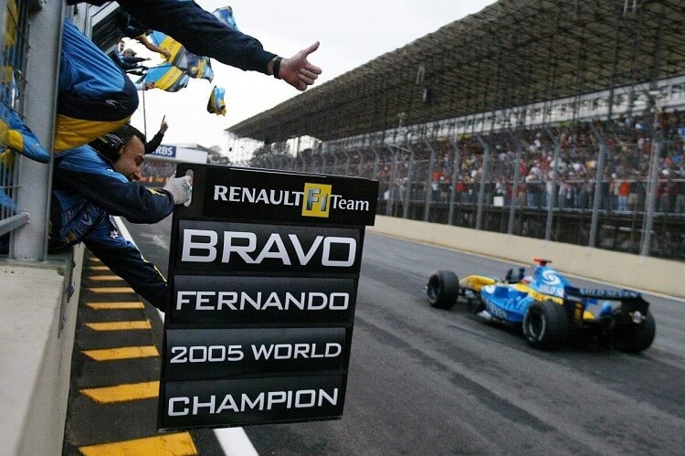
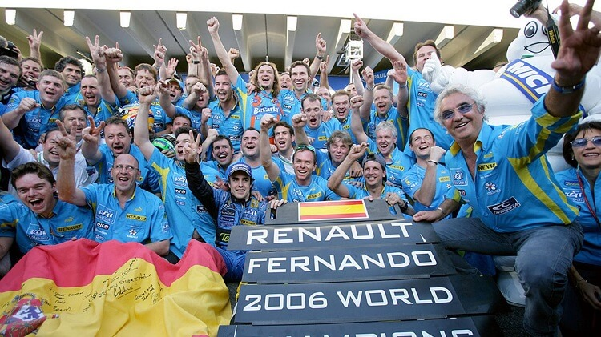

Fernando Alonso Díaz 29 Temmuz 1981 tarihinde İspanya'nın Asturias bölgesindeki Oviedo şehrinde doğmuştur.
2005 ve 2006 yılında Mild Seven Renault Formula 1 Takımı ile iki kere dünya şampiyonu olmuştur. Günümüzde Alpine F1 takımı ile yarışmaktadır.
İspanya'ya bağlı bir özerk bölge olan Asturias'ın başkenti Oviedo'da dünyaya gelen Alonso 5 yaşında karting sporuna başladı.
İspanya'da 1994 ila 1997 yılları arasında üç kez üst üste karting şampiyonluğu kazandı. 1996 yılında dünya karting şampiyonu oldu. Formula 1 kariyerinde 2001 F1 sezonunda Minardi takımıyla başladı
bir sonraki yıl Renault'da takımında test sürücüsü olarak görev yaptı. 2003 sezonu öncesinde takımın ana pilotlarından biri oldu.
25 Eylül 2005 tarihinde 24 yıl 58 günlükken Formula 1 Pilotlar Şampiyonluğu'nu kazanarak bu başarıyı elde eden en genç pilot oldu

Bir sonraki sezon tekrar şampiyon olarak Formula 1 tarihinin en genç çifte dünya şampiyonu oldu.

2007 sezonu için McLaren takımına katıldı. Ardınan 2008 ve 2009 sezonlarında tekrar Renault takımı için yarıştı.
2010 sezonunda Scuderia Ferrari takımına katıldı. Ferrari'de geçirdiği 5 sezonda şampiyonluğa ulaşamadı ancak üç sezonu (2010, 2012 ve 2013) ikinci olarak tamamladı.
Ayrıca bu beş sezonun tamamını takım arkadaşlarının yukarısında tamamlarken 11 yarış kazandı.
2010 ve 2012 sezonlarının son yarışlarında şampiyonluğu Sebastian Vettel kazandı. 2014 sezonunun sonunda kontratının bitimine iki yıl olmasına rağmen Ferrari'den ayrıldı.
Lakabı El Nano'dur. Alonso, UNICEF adına iyi niyet elçisi olarak görev yapmaktadır.
Ayrıca 2003 Malezya Grand Prix'inde pole pozisyonunu alarak bu başarıyı elde eden en genç pilot olmuştur. 2003 Macaristan Grand Prix'ini kazanarak Grand Prix kazanmayı başaran en genç pilot olmuştur
2016'nın Ocak ayı itibarıyla Alonso Formula 1 Grand Prix'i kazananan tek İspanyol pilot olurken 32 Grand Prix zaferi ile bu alanda altıncı sırada bulunmaktadır.
2018 yılında Formula 1 kariyerini bitiren Alonso, 2021 sezonunda Alpine takımıyla spora geri dönmüştür.